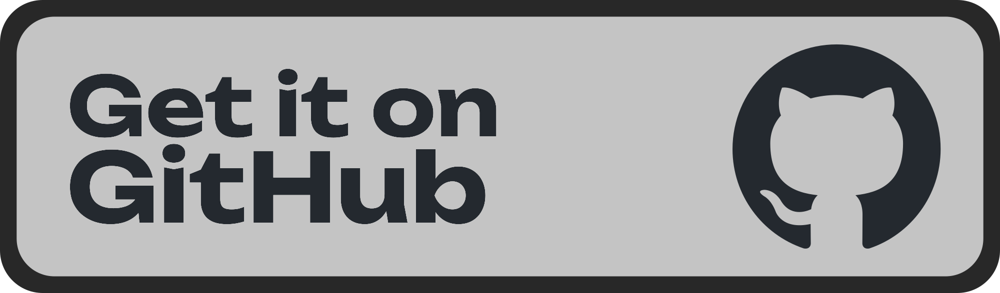

One of those tools you'd never believe you went without after trying out.

If you're a terminal user, maybe...
> ...you need to copy a file somewhere, but don't know where exactly.
> ...you need to make a change to something and you want to revert those changes quickly.
> ...you need to share a file with a website but you only know where this file is in the terminal.
> ...you need a "scratchpad" to save some words on to help remind you in the future.
> ...you need to save a bunch of data from some program for later.
Before Clipboard, you'd have to research which specific tool to download and figure out and remember how to use it and hope you get it right every time. Yuck, ugh, puke!
With Clipboard, do anything that involves moving information around much quicker and way easier. I know this because I've been in this situation before.
Step 1: Visit the official GitHub page and go to
"Quick Installation" to get Clipboard (it's easy).
Feel free to give us a star if you're feeling generous.
Step 2: Set optional environment variables (if you wish).
Step 3: Done! Start using Clipboard. See, I told you it would be easy.